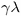
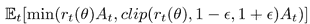
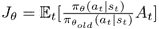
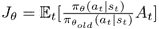

示例的代码放在两个源代码文件中:Chapter15/04_train_ppo.py和Chapter15/lib/model.py。演员、评论家和经纪人的职业与我们在A2C基线的职业完全相同。区别在于训练程序和我们计算优势的方式，但让我们从超参数开始。
ENV_ID = "RoboschoolHalfCheetah-v1"
GAMMA = 0.99
GAE_LAMBDA = 0.95
GAMMA的值已经很熟悉了，但是GAE_LAMBDA是新的常数，它指定了优势估计器中的λ因子。PPO文件中使用了0.95的值。
TRAJECTORY_SIZE = 2049
LEARNING_RATE_ACTOR = 1e-4
LEARNING_RATE_CRITIC = 1e-3
该方法假设对于每个子迭代，将从环境中获得大量的转换(如在前面关于PPO的部分中所提到的，在训练期间，它在采样的训练批次上进行若干个时期)。我们还为演员和评论家使用了两个不同的优化器(因为他们没有共享的权重)。
PPO_EPS = 0.2
PPO_EPOCHES = 10
PPO_BATCH_SIZE = 64
对于每批TRAJECTORY_SIZE样品，我们执行PPO目标的PPO_EPOCHES次迭代，最小批次为64个样品。值PPO_EPS指定新旧策略比率的剪辑值。
对于从环境中获得的每1k次观察，我们执行10集的测试，以获得当前策略的总回报和步骤数。下面的函数采用具有步长的轨迹，并计算演员的优势和评论家训练的参考值。我们的轨迹不是一个单一的事件，而是几个串联在一起的事件。
def calc_adv_ref(trajectory, net_crt, states_v, device="cpu"):
values_v = net_crt(states_v)
values = values_v.squeeze().data.cpu().numpy()作为第一步，我们要求批评家将状态转换成价值。
last_gae = 0.0
result_adv = []
result_ref = []
for val, next_val, (exp,) in zip(reversed(values[:-1]), reversed(values[1:]), reversed(trajectory[:-1])):这个循环加入了获得的值和经验值。对于每个轨迹步骤，我们需要当前值(从当前状态获得)和下一个后续步骤的值(使用贝尔曼方程进行估算)。我们还以相反的顺序遍历轨迹，以便能够在一个步骤中计算更近的优势值。
if exp.done:
delta = exp.reward - val
last_gae = delta
else:
delta = exp.reward + GAMMA * next_val - val
last_gae = delta + GAMMA * GAE_LAMBDA * last_gae在每一步中，我们的操作都取决于该步的done标志。如果这是这一集的最后一步，我们没有事先的奖励要考虑(记住，我们是以相反的顺序处理轨迹)。所以，我们在这一步的delta值就是即时回报减去这一步的预测值。如果当前步骤不是最终步骤，delta将等于直接奖励加上后续步骤的贴现值，再减去当前步骤的值。在经典的A3C方法中，该增量被用作优势估计，但在这里，使用平滑版本，因此优势估计(在last_gae变量中跟踪)被计算为具有折扣因子的增量之和。
result_adv.append(last_gae)
result_ref.append(last_gae + val)该函数的目标是为评论家计算优点和参考值，所以我们将它们保存在列表中。
adv_v = torch.FloatTensor(list(reversed(result_adv))).to(device)
ref_v = torch.FloatTensor(list(reversed(result_ref))).to(device)
return adv_v, ref_v在训练循环中，我们使用PTAN库中的ExperienceSource(steps_count=1)类收集所需大小的轨迹。有了这样的配置，它为我们提供了来自元组(state, action, reward, done)环境中的个体步骤。
trajectory.append(exp)
if len(trajectory) < TRAJECTORY_SIZE:
continue
traj_states = [t[0].state for t in trajectory]
traj_actions = [t[0].action for t in trajectory]
traj_states_v = torch.FloatTensor(traj_states).to(device)
traj_actions_v = torch.FloatTensor(traj_actions).to(device)
traj_adv_v, traj_ref_v = calc_adv_ref(trajectory, net_crt, device=device)当我们有足够大的轨迹用于训练时(由上面的TRAJECTORY_SIZE超参数给出)，我们将状态和采取的行动转换成张量，并使用已经描述过的函数来获得优势和参考值。尽管我们的轨迹很长，但是我们的测试环境的观测值很短，所以在一个步骤中处理我们的批处理是很好的。在Atari帧的情况下，这样的批处理可能会导致GPU内存错误。
下一步，我们计算采取行动的概率的对数。该值将被用作PPO目标中的 。此外，我们还对优势的均值和方差进行了归一化处理，以提高训练的稳定性。
。此外，我们还对优势的均值和方差进行了归一化处理，以提高训练的稳定性。
mu_v = net_act(traj_states_v)
old_logprob_v = calc_logprob(mu_v, net_act.logstd, traj_actions_v)
traj_adv_v = (traj_adv_v - torch.mean(traj_adv_v)) / torch.std(traj_adv_v)随后的两行删除了轨迹的最后一个条目，以反映我们的优势和参考值比轨迹长度短一步的事实(因为我们在calc_adv_ref函数内的循环中移动了值)。
trajectory = trajectory[:-1]
old_logprob_v = old_logprob_v[:-1].detach()当所有的准备工作完成后，我们在我们的轨道上进行几次训练。对于每一批，我们从相应的数组中提取部分，并分别进行评论家和演员训练。
for epoch in range(PPO_EPOCHES):
for batch_ofs in range(0, len(trajectory), PPO_BATCH_SIZE):
states_v = traj_states_v[batch_ofs:batch_ofs + PPO_BATCH_SIZE]
actions_v = traj_actions_v[batch_ofs:batch_ofs + PPO_BATCH_SIZE]
batch_adv_v = traj_adv_v[batch_ofs:batch_ofs + PPO_BATCH_SIZE].unsqueeze(-1)
batch_ref_v = traj_ref_v[batch_ofs:batch_ofs + PPO_BATCH_SIZE]
batch_old_logprob_v = old_logprob_v[batch_ofs:batch_ofs + PPO_BATCH_SIZE]训练评论家，我们需要做的就是用事先计算好的参考值计算出均方误差 ( MSE )损失。
opt_crt.zero_grad()
value_v = net_crt(states_v)
loss_value_v = F.mse_loss(value_v.squeeze(-1), batch_ref_v)
loss_value_v.backward()
opt_crt.step()在演员训练中，我们最小化被否定的裁剪目标:，其中 。下面几行是这个公式的一个简单的实现。
。下面几行是这个公式的一个简单的实现。
opt_act.zero_grad()
mu_v = net_act(states_v)
logprob_pi_v = calc_logprob(mu_v, net_act.logstd, actions_v)
ratio_v = torch.exp(logprob_pi_v - batch_old_logprob_v)
surr_obj_v = batch_adv_v * ratio_v
clipped_surr_v = batch_adv_v * torch.clamp(ratio_v, 1.0 - PPO_EPS, 1.0 + PPO_EPS)
loss_policy_v = -torch.min(surr_obj_v, clipped_surr_v).mean()
loss_policy_v.backward()
opt_act.step()
 。PPO提出的新目标是。改变目标的原因是
。PPO提出的新目标是。改变目标的原因是